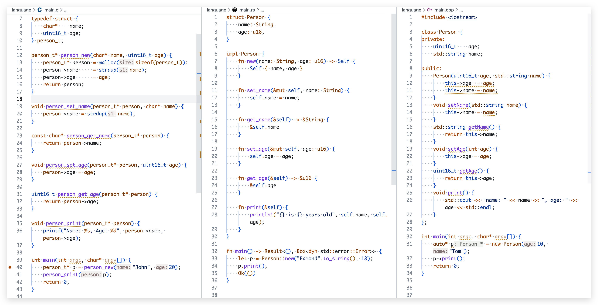
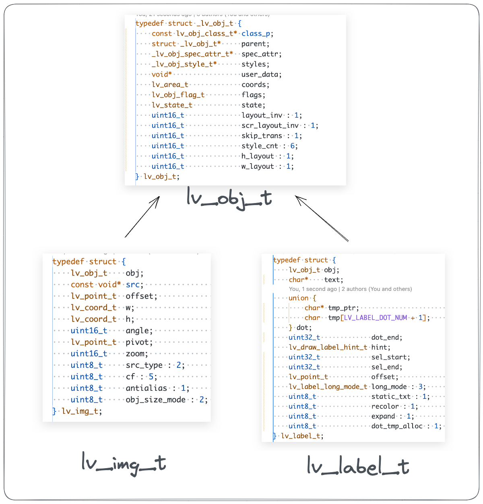

【C】C 语言和 OOP
Cfront编译器
语言之间的转换：C++语言 –> C语言 –> 汇编 –> 机器指令
- 汇编器：将汇编语言翻译成机器指令
- C编译器：将C语言翻译成汇编语言
- C++编译器：将C++语言翻译成C语言
广义上的 C 编译器，指的是把 C 语言翻译成机器码（程序）的编译器。但严格意义上讲，是指把 C 语言翻译成汇编语言，然后再由汇编器把汇编语言翻译成机器码。
看到 C++ 编译器时，你可能会有疑问，C++编译器是将C++语言翻译成C语言？是不是在扯犊子，C++语言和C语言不是两种不同的语言吗？怎么能由一种语言翻译成另一种语言呢？这时候来看下 C++ 原始的编译器：CFront 编译器的描述
Cfront was the original compiler for C++ (then known as “C with Classes”) from around 1983, which converted C++ to C; developed by Bjarne Stroustrup at AT&T Bell Labs.
Cfront 是原始的 C++ 编译器，作用是把 C++ 代码转成 C 代码
可能你对把 “C++代码转成 C 代码”这个问题没有疑问了。但又会冒出新的问题：
- C++代码都转成什么样的 C 代码了？
Class转成 C 的时候变成了什么？- C++的引用在 C 里面是怎么实现的？
public和private关键字怎么实现？this关键字到底是怎么来的？- 方法重载怎么实现？
- etc
不过这里不会一一讨论这些细节，主要是讲和 OOP 面向对象相关的知识点。有兴趣可以移步CFront 的源代码查阅：https://www.softwarepreservation.org/projects/c_plus_plus/cfront/release_1.0/src/cfront/
函数和方法
如果你只写过 C，那你可能只听过 Function 函数这个词， 但如果你学了其它支持面向对象范式的语言，如 C++、Java、Golang 之类，会给你说，Class 里面的函数叫方法 Method。那今天来做一个总结：
- 原本只有函数 Function
- 而方法 Method 是函数的特例、子集，它其实也是函数
有什么证据来支持你这个结论吗？往下看 this 关键字。
this关键字
this关键字“官方”一点的解释：this 是当前类的实例。不知道在用 this 关键字的时候有没有过疑问：
this关键字怎么来的？你也没有声明和定义，就能直接用了- 如果他是个变量，不都应该有作用域吗？
第一个疑问：编译器给你生成的。实际上现代的编译器能做的更多：修改代码、插入指定、编译时计算、即时编译 Jit、边翻译边执行（解释器）、etc。对于后者作用域，你大概知道它的作用域：在方法 Method 里面都能用。那它实现的方式：应该是这个方法里面的“一个函数的参数”或者是“一个局部变量”，所以才能去使用this变量。
看到这里，你可能还是有点懵，下面图中写了三段代码：左边是 C 语言、中间是 Rust 语言、右边是 C++语言。代码功能含义都一样：定义了一个 Person 的类，定义了构造函数和它的一些方法。不同于 C++、Java这类语言，会完全的隐藏this 关键字，Rust 和Python会保留了一个 self 关键字在函数的参数里面。那现在有一个大概的结论：this 就是“方法”里面的一个参数。而“恰好”C++版本的 this 可以通过-> 操作符去访问它的成员，这不就是 C 语言中：结构体指针通过->操作符去访问成员 的方式一模一样吗。所以说：方法是一种特殊的函数，隐藏了一个当前类实例 this参数的函数。

方法重载怎么实现
函数重载只需要增加编译器支持：编译器在编译时去改代码，去对方法进行重命名。
|
编译：
# 使用用clang编译器 编译程序 |
TODO: 代码解释，重命名 symbol
封装：
封装从字面上来理解就是包装的意思，是指利用抽象数据类型将数据和基于数据的操作封装在一起，使其构成一个不可分割的独立实体。数据被保护在抽象数据类型的内部，尽可能地隐藏内部的细节，只保留一些对外接口使之与外部发生联系。两个关键点：封装和隐藏；封装：就是把结构体和函数捆绑在一起，看成一个整体，上面 this关键字部分，专业点就是信息隐藏，
封装：
TODO：curl、sqlite3、dbus、Glib接口设计
隐藏：成员和函数
一个对象的属性私有化，同时提供一些可以被外界访问的属性的方法，如果不想被外界方法，我们大可不必提供方法给外界访问
- 良好的封装能够减少耦合。
- 类内部的结构可以自由修改。
- 可以对成员进行更精确的控制。
- 隐藏信息，实现细节。
TODO：dbus
继承：
用 C 实现继承有两种方法：
- 拓展：父类用
void*去拓展子类 - 组合：子类嵌套父类结构体
拓展：父类用 void* 去拓展子类
|
组合：子类嵌套父类结构体
把父类结构体放在子类的结构成员的第一个，
|

多态：
多态在面向对象语言里面有两种实现方式：抽象类实现、接口实现。但从结果上讲，他们解决的问题是：最后去调谁的实现函数的问题，是调用 A 子类的实现，还是调用 B 子类的实现。所以最后本质问题是，调用哪个函数的问题，对于C语言来说，就是一个函数指针变量赋值的问题。你对这个函数指针变量赋值了 A 类的函数，最终就会调用 A 类的实现；对这个函数指针变量赋值了 B 类的函数，最终就会调用 B 类的实现。
TODO：举例 fs？
面向对象 & 面向过程 怎么选？
- 当然是：全都要
- 建模时、整体结构上，使用面向对象
- 处理流程、细节上，使用面向过程
TODO